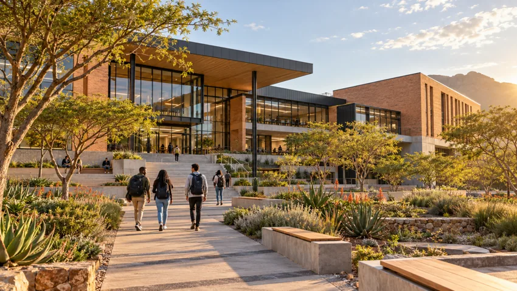

LEARN WITH A COMMUNITY
Different perspectives.
A shared curiosity.
Meet the teaching and research roles that help a department thrive.
The profiles below are fictional examples created for this academic prototype.
Find your conversation.
BEYOND THE CLASSROOM
A space for
your questions.
Study groups, peer feedback and project showcases make practical learning a shared experience. Connect with a lecturer or start a conversation about your next project.
Talk about a project